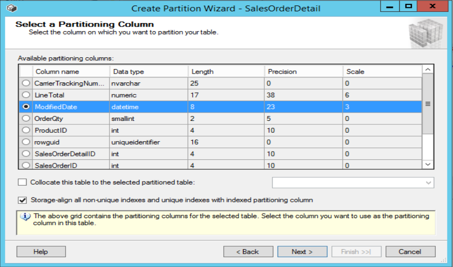

Overview
A technique used to divide a large database table into smaller, more manageable pieces called partitions. Each partition can be managed and accessed independently, but together they represent the entire table. This improves performance, manageability, and can help with data organization, as each partition can be stored on different filegroups or even different storage devices. It supports table and index partitioning.
Table Partitioning is only available in Enterprise Edition.
Partiton Locks - Implemented before escalating to Table Lock. This is good because why lock the entire table when you only need a section of it.
Implementation
- Create Filegroups.
- Create Data Files.
- Create partitions function and scheme.
- Create Partition via SSMS.
- Finish the Wizard.
- Check Table Properties.
- Check Records.
USE PartitionDB ALTER DATABASE PartitionDB ADD FILEGROUP [2011] GO ALTER DATABASE PartitionDB ADD FILEGROUP [2012] GO ALTER DATABASE PartitionDB ADD FILEGROUP [2013] GO
ALTER DATABASE PartitionDB ADD FILE ( NAME = 'SalesOrderDetail_2011', FILENAME = 'D:\SQL_Data\INUSER\PartitionDB_Data_SalesOrderDetail_2011.ndf', SIZE = 1024KB, FILEGROWTH = 512KB ) TO FILEGROUP [2011] ALTER DATABASE PartitionDB ADD FILE ( NAME = 'SalesOrderDetail_2012', FILENAME = 'D:\SQL_Data\INUSER\PartitionDB_Data_SalesOrderDetail_2012.ndf', SIZE = 1024KB, FILEGROWTH = 512KB ) TO FILEGROUP [2012] ALTER DATABASE PartitionDB ADD FILE ( NAME = 'SalesOrderDetail_2013', FILENAME = 'D:\SQL_Data\INUSER\PartitionDB_Data_SalesOrderDetail_2013.ndf', SIZE = 1024KB, FILEGROWTH = 512KB ) TO FILEGROUP [2013]
IF NOT EXISTS (SELECT name FROM sys.partition_functions WHERE name = 'pfn_PartitionDB_ModifiedDate') BEGIN CREATE PARTITION FUNCTION [pfn_PartitionDB_ModifiedDate](DATETIME) AS RANGE LEFT FOR VALUES ( '2011-12-31 23:59:59', '2012-12-31 23:59:59', '2013-12-31 23:59:59' ) END IF NOT EXISTS (SELECT name FROM sys.partition_schemes WHERE name = 'ps_PartitionDB_ModifiedDate') BEGIN CREATE PARTITION SCHEME [ps_PartitionDB_ModifiedDate] AS PARTITION [pfn_PartitionDB_ModifiedDate] TO ( [2011], [2012], [2013], [PRIMARY]) END

USE PartitionDB SELECT DISTINCT p.partition_number AS [Partition], s.name, o.name, fg.name AS [Filegroup], p.Rows FROM sys.partitions p INNER JOIN sys.allocation_units au ON au.container_id = p.hobt_id INNER JOIN sys.filegroups fg ON fg.data_space_id = au.data_space_id INNER JOIN sys.objects o ON o.object_id = p.object_id INNER JOIN sys.schemas s ON s.schema_id = o.schema_id WHERE o.type = 'U' AND p.rows > 0 AND s.name = 'Sales' AND o.name = 'SalesOrderDetail' AND fg.name <> 'PRIMARY' UNION SELECT DISTINCT p.partition_number AS [Partition], s.name, o.name, fg.name AS [Filegroup], p.Rows FROM sys.partitions p INNER JOIN sys.allocation_units au ON au.container_id = p.hobt_id INNER JOIN sys.filegroups fg ON fg.data_space_id = au.data_space_id INNER JOIN sys.objects o ON o.object_id = p.object_id INNER JOIN sys.schemas s ON s.schema_id = o.schema_id WHERE o.type = 'U' AND s.name = 'Sales' AND o.name = 'SalesOrderDetail' AND fg.name = 'PRIMARY' AND p.partition_number <> 1 AND p.rows > 0 ORDER BY 4
Reference
https://www.youtube.com/watch?v=q06fH80w7Os
https://learn.microsoft.com/en-us/sql/relational-databases/partitions/partitioned-tables-and-indexes?view=sql-server-ver16